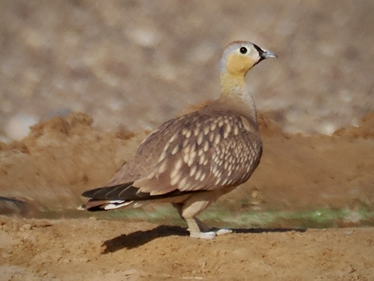
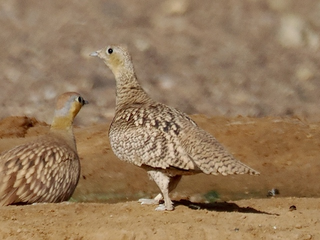

Crowned Sandgrouse
Pterocles coronatus
Order: Pterocliformes
Family: Pteroclidae

A rufous brown sandgrouse. Male has a black triangle on the forehead. Sandgrouse give the impression of being a cross between a pigeon and a chicken. In fact, they are more closely related to pigeons.

Female has brown speckles on the whole body. During breeding season, sandgrouse are known to soak their feathers in water and carry it back to their chicks.